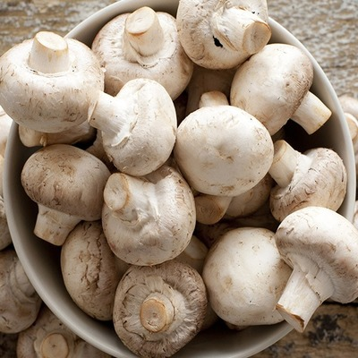

Mushroom
Mushroom, the conspicuous umbrella-shaped fruiting body (sporophore) of certain fungi, typically of the order Agaricales in the phylum Basidiomycota but also of some other groups. Popularly, the term mushroom is used to identify the edible sporophores; the term toadstool is often reserved for inedible or poisonous sporophores. There is, however, no scientific distinction between the two names, and either can be properly applied to any fleshy fungus fruiting structure.
Commercially important, edible mushrooms include portobellos (Agaricus bisporus), whose forms include button mushrooms, cremini, and baby bellas, and shiitake (Lentinula edodes). The morels (Morchella, Verpa) and false morels or lorchels (Gyromitra, Helvella) are popularly included with the true mushrooms because of their shape and fleshy structure; they resemble a deeply folded or pitted conelike sponge at the top of a hollow stem. Some are among the most highly prized edible fungi (e.g., Morchella esculenta). Edible truffles (various Tuber species), which hardly resemble mushrooms, are also popularly labeled as such. These and other edible mushrooms and fungi are free of cholesterol and contain small amounts of essential amino acids and B vitamins. However, their chief worth is as a specialty food of delicate, subtle flavour and agreeable texture. By fresh weight, the common commercially grown mushroom is more than 90 percent water, less than 3 percent protein, less than 5 percent carbohydrate, less than 1 percent fat, and about 1 percent mineral salts and vitamins.